人工神经网络的基本知识
本文最后更新于：2022年7月13日 中午
这个原本是通信网理论与应用这门课的一个调研型的大作业。（不过这个和通信网有什么关系）就当是笔者从零开始学习深度学习吧。
本篇BLOG含有大量的公式，用来阐明最基本的神经网络在优化问题的基本算法。此外根据查到的各种资料，本篇也会简单说明基于神经网络而发展的典型网络结构以及使用这些网络结构的领域。虽说含有大量的公式，不过用到的原理也只是最基本的高等数学。为了比较美观的展现公式和算法，还会使用一些基本的线性代数运算。
不过，毕竟初来乍到，可能有很多漏洞和疏忽之处，恳请理解指正。
符号声明
| 符号 | 作用 |
|---|---|
| $x_k^{(L)}$ | 第$L$层的第$k$个神经元的值 |
| $w_{kn}^{(L)}$ | 第$L$层的第$k$个神经元与第$L-1$层的第$n$个神经元的连接权重 |
| $\theta_k^{(L)}$ | 第$L$层的第$k$个神经元的输入偏置 |
| $z_k^{(L)}$ | 第$L$层的第$k$个神经元通过激活函数之前的值 |
| $E$ | 误差 |
| $\hat{x}_k^{(L)}$ | 第$L$层的第$k$个神经元的估计值（通常指最后一层） |
| $N^{(L)}$ | 第$L$层的神经元的个数 |
参考与推荐阅读
本篇大部分内容参考自周志华的《机器学习》（西瓜书）和3Blue1Brown关于神经网络的视频。私心推荐一下3Blue1Brown这位作者的视频。
基本概念
神经网络
神经网络是由具有适应性的简单单元组成的广泛并行互联的网络，它的组织能够模拟生物神经系统对真实世界物体所作出的交互反应。
上述概念来源于周志华在《机器学习》这本书中的对原论文的翻译。神经网络是由多个进行特定运算的单元组成的网络。
m-p神经元模型
上文提到论文中的神经元模型是含有时间这个参数的。在下面这张图中，忽略时间的影响得到神经元的结构。
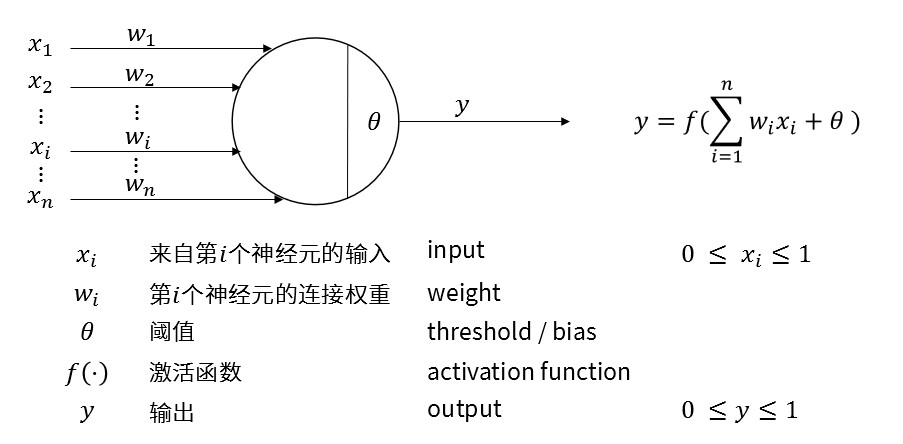
M-P神经元的数学模型为：
关于这张图上的模型，仍需几点特殊说明：
- 对于一个神经元而言，这里$x$表示输入，$y$表示输出。而在多级神经网络中，$y$将表示下一级神经元的一个输入。
- 为了便于理解，在这里我们将输入和输出人为规定成0和1之间的数。在实际应用中不存在这样的限制。
激活函数
激活函数的出发点是将各个神经元的值限制在0到1之间，于是有单位阶跃函数和Sigmoid函数。随着这个限制的消失，追求更高收敛速度和性能的激活函数得以出现。例如ReLU函数、Softplus函数。
单位阶跃函数：
Sigmoid函数：
ReLU函数：
Softplus函数：
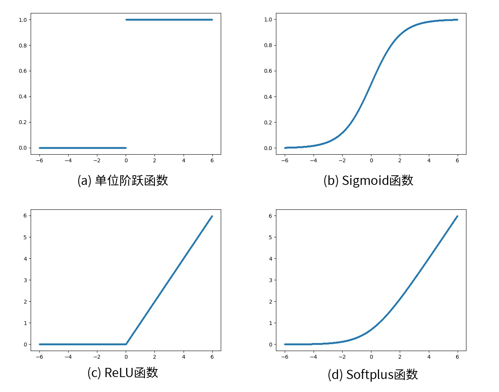
多层前馈神经网络
这部分的公式会开始复杂起来，可以参考符号声明回顾各个符号的含义。
通常来说，一个基本的神经网络不会只有一层，而是由很多层构成的。我们把每个圆圈都当作可以存放数值的一个神经元，上一层神经元的数值会通过连线影响到下一层的数值。大概就像下面的这张图一样。通常我们把不是输入输出层的神经元称作隐含层。而输入层的值由输入向量完全决定，所以该层是所有层中最特殊的一层。我们把隐含层和输出层的神经元称作功能神经元。
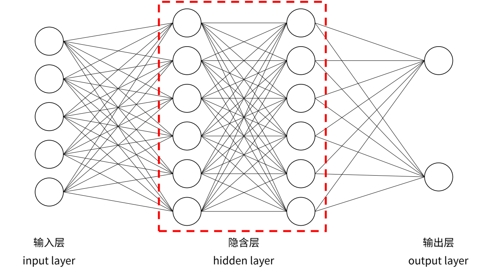
我们参考公式\eqref{eq1}，更换符号和角标使得更加符合多层感知机的应用情况。
由此我们可以写出从第$L-1$层的各神经元的值计算第$L$层各神经元的值的公式。
简化后就是:
这个公式看起来就要美观不少。此外，该形式也比较容易使用numpy这种支持矩阵运算的插件来实现。
应用环境
我们通过一些简单的例子，简单阐述一下这种神经网络结构可以用来做什么样的事情，以及网络复杂度与所解决问题的复杂度的相关性。
简单的逻辑运算（与或非）
先看这个非常简单的例子。我们把这样的 “最小神经网络” 称作感知机：只有两个输入神经元和一个功能神经元。我们可以发现这样的感知机就可以搭建与或非门了。通过设定权值$w$和偏置$\theta$就可以调整输出结果。（有了与或非是不是就可以用来搭计算机了x）
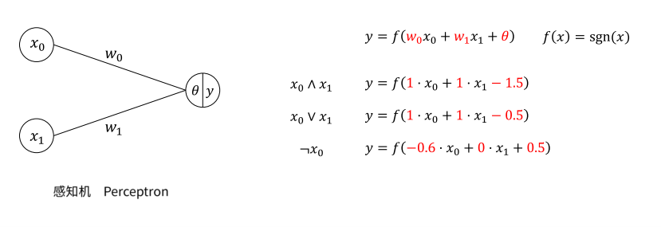
较复杂的逻辑运算（异或）
但在工程中，异或门使用的情况要远多于与或非门的使用情况。但实际上，异或问题无法通过上图的感知机模型实现。原因是简单的感知机在解决分类问题时，只能在二维平面画一条直线。而异或问题显然不能在二维平面内用一条线分开。
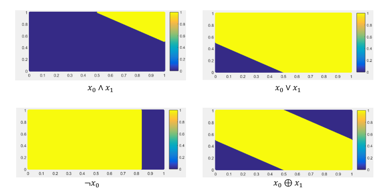
看起来异或问题已经超出了简单的感知机的能力。那如何用神经网络实现异或问题呢？emm，再加一层。
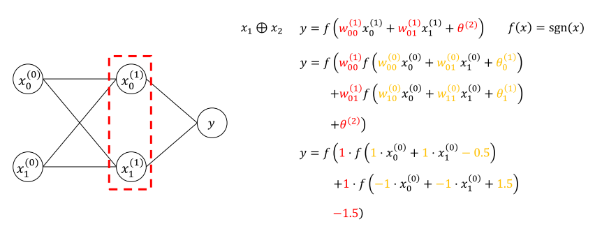
由此得知，通常来讲，问题越复杂，必要的神经元的个数和层数越多。
再复杂一点的问题（简单的二分类问题）
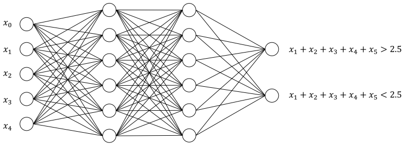
上面这个网络用来解决一个简单的二分类问题。即判断五个0~1的数字之和大于2.5还是小于2.5。（等于2.5？概率为零怕什么（不是））由于2.5这个结果分在任意一组均可，在之后描述该问题时，暂忽略该值。上面这个网络虽然可能不是最精简的网络，但可以完成这个分类问题，最简规模也应比异或问题要大很多。
更复杂一点的问题（MNIST数据集识别）
这个就是很出名的有关于手写数字的数据集了。虽然目前有更好的解决办法，但这种普通的神经网络也可以解决这个问题。这个数据集中每一个数字都是由28*28像素构成的。图中这个网络结构由3Blue1Brown提出，不是最简单的方案但也可以完成数字分类的工作。但显然，这个更复杂的问题的解决方案，也需要更复杂的模型才可以解决。
MNIST数据集：http://yann.lecun.com/exdb/mnist/
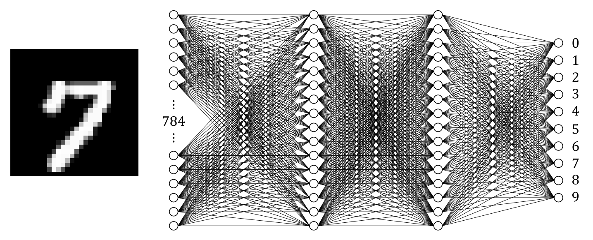
实现方法
这部分会详细解释一下神经网络解决分类问题的基本流程，以及神经网络优化问题的数学模型以及解法。这部分会有大量的公式，但基本原理来自于高等数学导数的链式法则。
神经网络优化问题的基本流程
感知机虽然只有一个功能神经元，不过也算是某种意义上的神经网络。先以感知机实现的与问题为例介绍下神经网络的优化问题是什么样子的。
我们把感知机的模型再放在这里便于查看。然后定义模型:
我们的将按照下面的步骤完成这个优化问题：
- 初始化$w_0$、$w_1$、$\theta$
- 输入一组训练数据$x_0$、$x_1$得到输出$\hat{y}$
- 根据该训练数据的标签计算，得到误差$E(y, \hat{y})$
- 根据误差$E$调整$w_0$、$w_1$、$\theta$
1.初始化$w_0$、$w_1$、$\theta$
虽然说初始化对最终收敛得到的结果应该会有些影响，不过通常我们使用随机数据进行初始化。
2.输入一组训练数据$x_0$、$x_1$得到输出$\hat{y}$
我们先选一组测试数据，比如：
然后根据公式\eqref{eq1}计算得到估计值$\hat{y}$。
3.根据该训练数据的标签计算，得到误差$E(y, \hat{y})$
接下来我们评价一下这个网络的输出结果。emm，显然与预期结果不符。这种不符合的程度，我们通过定义误差函数计算出实际结果与预期结果的差距。
4.根据误差$E$调整$w_0$、$w_1$、$\theta$
之后，我们根据这个误差，通过一定的方法更新我们的三个参数$w_0$、$w_1$、$\theta$。通常，我们会控制一次学习改变的程度，从而使系统慢慢接近想要的结果。这里我们使用下面这种方法进行调整。
我们把这里的$\eta$称作学习率。因此我们按照这个公式完成对数据的调整。（关于$\theta$的调整方式我们在后文详述。）
调整之后，我们就可以再返回步骤2，导入新的训练数据，对各个变量进行调整。下面这张图是笔者按照这种方式训练出来的结果，看起来还是很完美的实现了与门的功能。
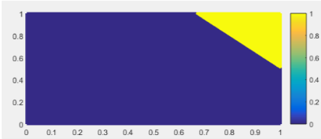
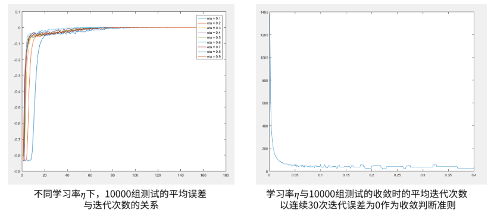
神经网络优化问题的数学建模与算法
介绍完基本的流程，接下来的部分会详细的的介绍神经网络优化问题的数学模型，并如何对这个模型进行求解。当然，毕竟这是一个非常复杂的问题，可能无法准确的找到最优解，不过对于工业需求而言，总能在不断尝试中获得一个符合要求的结果。
我们以前面提到的简单的二分类问题为例，来进行下面的推导。首先，我们把前面这个问题的网络结构放在这里。
我们希望在所有的训练例中，输出结果与预期结果尽可能的一致，也就是误差尽可能的小。所以这个问题的目标函数为：
当然，定义$E$的方法各有不同，这里我们使用最常见的均方误差，所以公式\eqref{eq:3}改写成：
这里的$m$指的是某一个训练例，$N$表示训练例的个数。
那接下来的问题就是，如何调整$w$，$\theta$，使误差$E$最小。看起来这是一个无约束最小值问题。因此，这里可以求助于数学模型的相关知识，使用梯度下降法。
梯度下降法
梯度下降法是一个比较常见的用来解决无约束最小值问题的算法，但该算法无法保证所得结果为全局最小值。我们用下面这个简单的二次函数图像来说明梯度下降法。
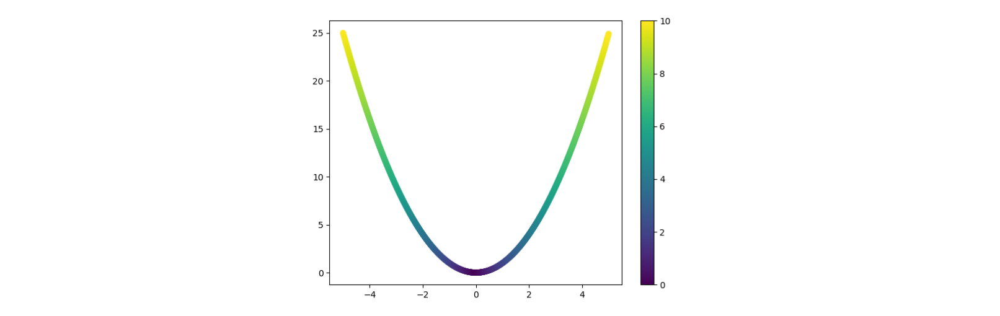
图中的曲线上的颜色表示该点出梯度的绝对值。梯度用来表征该点数值变化的最大值以及方向。因此利用梯度的这个性质，我们每次以梯度为参考，不断的向变化最大的方向下降，梯度的绝对值越大，下降的速度越大。当然这些都是比较定性的描述，下面我们用公式来描述这个算法。首先确定目标函数:
随机一个初始值，然后按照下面的策略不断更新参数$x$，使目标函数$y$达到最小。
序号 $x$ $y$ $\delta x$ 1 $-3$ $9$ $0.6$ 2 $-2.4$ $5.76$ $0.48$ 3 $-1.92$ $3.686$ $0.384$ 4 $-1.536$ $2.359$ $0.3072$ 5 $-1.229$ $1.510$ $0.2458$ 6 $-0.983$ $0.966$ $0.1966$ 7 $-0.786$ $0.618$ $0.1258$ 8 $-0.629$ $0.396$ $0.1006$ 9 $\cdots$ $\cdots$ $\cdots$ 根据表格内容发现，仅用了8次迭代就将结果的误差下降到$0.4$左右，可见这个算法还是有一定的效果的。但是，前文我们提到该算法无法保证所得结果为全局最小值，我们以下面的例子说明这一点。
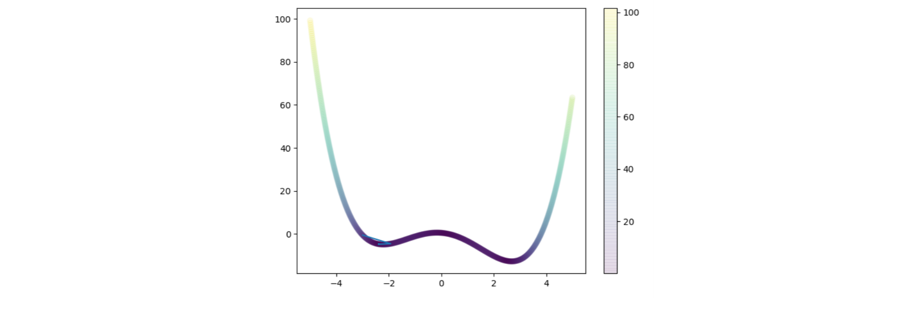
我们仍以$x = -3$作为初始值，迭代100次，结果如下：
显然，结果落入了局部最小值，而不是全局最小值。因此也提出了很多改善这一问题的方法，例如模拟退火算法等等，但本质上无法解决落入局部极小的问题。不过在工业上，局部极小的结果往往也足以满足需求，因此目前的优化算法都大体基于梯度下降法。
由此，我们根据梯度下降算法，完成对神经网络里面各种参数的优化。反正求梯度就是求偏导嘛。首先我们列出各个参数与误差的函数关系。
然后开始求导。
观察上面的三个公式，发现其实就是普通的导数链式法则。但之所以拆解成这样的形式，是因为这样的形式可以被很方便的计算出来。
最后一步，将公式\eqref{eq:4}中的第三个公式代入第一个公式，就完成了第$L-1$与$L-2$层的误差传递。从而修改每一层的每一个参数，大功告成。
笔者根据以上的算法，完成了简单的二分类问题。基于Python的源码可以参见这个链接。
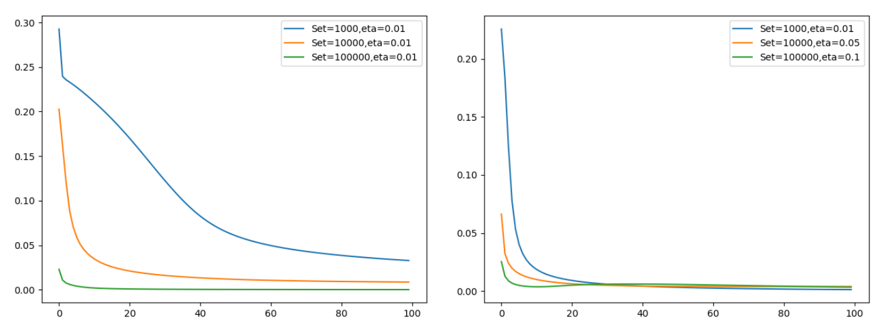
不过，这些算法最后都被TensorFlow或者pyTorch等等模块内置了，使用的时候只需要一句话就完成所有参数的调整，还是很方便的。
相关技术
可喜可贺，最复杂的部分已经介绍完了，后面是一些现今针对这个简单的前馈神经网络的问题进行调整，得到一些新的性能更好的网络。
多层前馈神经网络的不足
虽然这个模型可以解决很多很多复杂的无法提取特征的分类问题，但在应用过程中，发现还是有很多不足，也提出了很多针对某一个问题对该模型进行改进。
运算量大
以我们刚刚得到的二分类问题这个模型为例，发现该模型一共使用了$92$个变量。需要计算$78$次浮点数乘法。这远比计算$4$次浮点数加法要复杂得多。再加上上万的训练数据，无疑是一个巨大的负担。
针对这一问题，人们提出了很多模型简化的方案，提高系统的效率。目前最常见的方案称作权值共享。当然不能随意选择哪些部分权值相等，通常人们将具有一定相关性的节点选择相同的权值。这也是卷积神经网络的一个出发点。
输入节点固定
可以发现，这个系统输入点数是固定的。训练好的系统无法对与输入长度不符的数据进行分类。另外，即使在末位补零与输入长度匹配效果也不是很理想。于是提出循环神经网络，将时间参数引入神经元模型，这样就可以输入不定长的数据，解决序列相关的问题。
梯度弥散与梯度爆炸
首先，我们简单计算一下各层对权重的偏导$\frac{\partial E}{\partial w}$
可以发现，这个偏导数里面有激活函数导数的三次幂。可见当层数越多时，激活函数的导数对系统的影响越大。那我们来看一下$\mathrm{Sigmoid}(x)$的导数，可见其函数值最大值在$0.25$左右。随着系统层数的增加，梯度值会越来越小，导致首层的神经元基本无法得到优化。我们把这种现象称作梯度弥散。相对的，导数值基本大于$1$，从而使首层收到的梯度值异常的大，把这种称作梯度爆炸。
卷积神经网络与模型压缩
卷积神经网络主要使用了权值共享从而大步幅降低运算量。当然，也充分利用了图像数据的相关性，使相邻的一部分像素共享相同的权值。为了使权值共享带来的负效应尽可能的小，这个网络也对神经网络的运算做了适当的修改，但也基本符合之前的结论。该模型被广泛的使用在计算机视觉领域。（多半也是因为视觉相关的图像数据内相关性很高）
卷积神经网络主要有两种比较特殊的层。通常我们把他们称作卷积层与池化层。
卷积层所做的如下图所示，对原始数据进行窗口滑动，与权值矩阵对应位置相乘再相加，得到一个数据，作为输出结果。下面这个图比较生动的说明了卷积层的功能。也推荐这个网页关于卷积层的动态展示。（不过这哪里卷积了x）

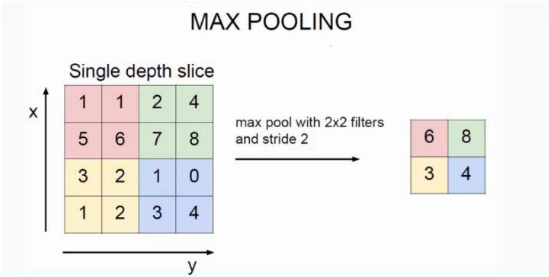
为了简化说明，我们把卷积层与池化层作为一个神经元。以这个著名的手写数字识别的模型为例，发现其功能神经元的第一层只使用了6个神经元，第二层使用了10个神经元。每两个神经元的连接由原来的乘法变成了卷积+池化。从而大幅度的减少系统的运算量。
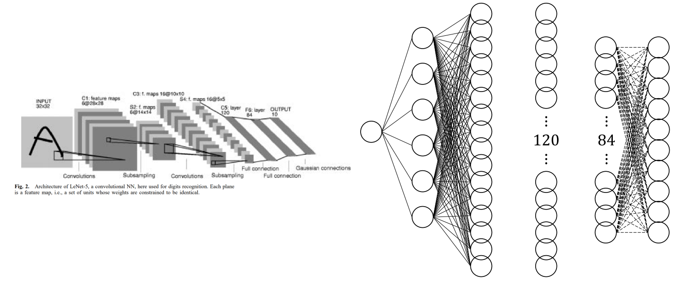
但为了满足移动设备的需要，当前的模型仍然过于复杂。Google的相关团队 与 旷视的Face++团队分别提出了MobileNets和ShuffleNet进行进一步的模型压缩。
MobileNets：https://arxiv.org/abs/1704.04861v1
ShuffleNet：https://arxiv.org/abs/1707.01083v2
循环神经网络与长短期记忆网络
为了解决输入数据无法改变长度问题，于是引入循环神经网络。一般来说，对于输入到循环神经网络的一个元素而言，其输入到输出只有三层。但网络隐含层的状态会随着循环次数不断变化。这样就被称作循环神经网络了。该网络经常使用在语音处理，自然语音处理等等。

不过，这个模型的梯度弥散问题非常严重。于是进一步引入每个神经元的遗忘系统，得到长短期记忆网络。因为变量增多，系统也看着更加复杂起来。
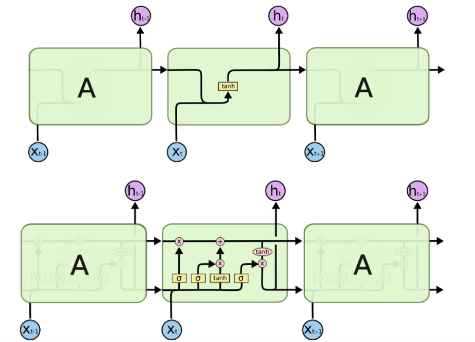
残差神经网络
为了解决梯度弥散与梯度爆炸的问题，这个模型只做了一点点简单的修改，却得到了出乎意料的效果。详情可以参考这篇提出残差神经网络的论文。
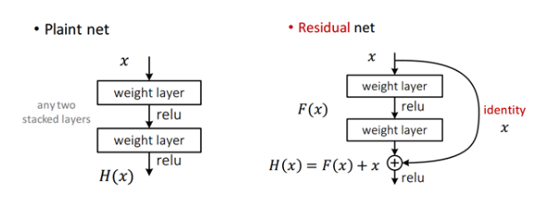
Special Thanks
在此感谢为这次调研提供帮助的各位。也感谢オレンジ提供的帮助与校对~~~
- Johntheuser
- オレンジ
- Tab
参考文献
- Kohonen, Teuvo . An introduction to neural computing. Neural Networks 1.1(1988):3-16
- But what is a Neural Network? | Deep learning, Part 1 3Blue1Brown https://youtu.be/aircAruvnKk
- THE MNIST DATABASE of handwritten digits Yann LeCun, Corinna Cortes, Christopher J.C. Burges http://yann.lecun.com/exdb/mnist/
- 使用Python将MNIST数据集转化为图片 name_s_Jimmy https://blog.csdn.net/qq_32166627/article/details/52640730
- Lécun, Y., Bottou, L., Bengio, Y., & Haffner, P. (1998). learning applied to document recognition. Proceedings of the IEEE, 86(11), 2278-2324. Gradient-based
- 刘建平Pinard, 卷积神经网络(CNN)模型结构 https://www.cnblogs.com/pinard/p/6483207.html
- 蒋竺波, CNN入门讲解：什么是采样层（pooling） https://zhuanlan.zhihu.com/p/32299939
- 刘建平Pinard,循环神经网络(RNN)模型与前向反向传播算法 https://www.cnblogs.com/pinard/p/6509630.html
- 刘建平Pinard, LSTM模型与前向反向传播算法 https://www.cnblogs.com/pinard/p/6519110.html
- Howard, A. G. , Zhu, M. , Chen, B. , Kalenichenko, D. , Wang, W. , & Weyand, T. , et al. (2017). Mobilenets: efficient convolutional neural networks for mobile vision applications.
- Zhang, X. , Zhou, X. , Lin, M. , & Sun, J. . (2017). Shufflenet: an extremely efficient convolutional neural network for mobile devices.
- He, K. , Zhang, X. , Ren, S. , & Sun, J. . (2015). Deep residual learning for image recognition.
- 周志华. (2016). 机器学习. 清华大学出版社.